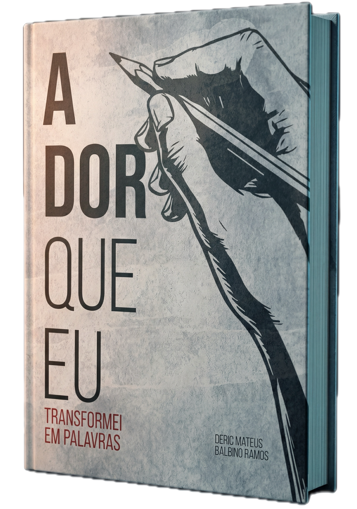
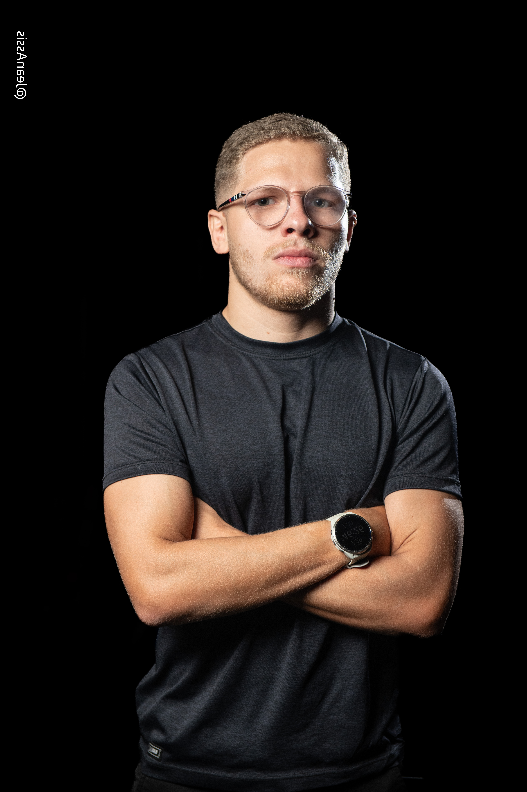

Crônicas · Literatura Brasileira
em palavras
Há dores que não cabem no silêncio. Este livro nasceu delas.
Adquirir o livro →
♥ 100% dos royalties são doados. Cada livro vendido transforma vidas — o autor não fica com nenhum lucro. ♥
"Porque escrever não é apenas contar histórias.
É sobreviver a elas."
Sobre o livro
Em "A Dor que Eu Transformei em Palavras", Deric Mateus Balbino Ramos apresenta 69 crônicas profundamente pessoais, divididas em cinco partes que exploram os sentimentos que nos definem enquanto humanos.
Este livro é para você que já chorou em silêncio, amou sem ser correspondido, perdeu quem amava, e mesmo assim, continuou. Porque enquanto houver palavras, haverá cura.
Uma advertência honesta
Quem foge da própria história
Se você prefere não olhar para dentro, essas páginas vão incomodar. E muito.
Quem acha que dor é fraqueza
Aqui, vulnerabilidade é a única linguagem. Se isso te envergonha, não continue.
Quem busca respostas prontas
Este livro não resolve nada. Ele só te mostra que você não está sozinho na bagunça.
Quem já "superou tudo"
Se você nunca mais sentiu saudade, nunca mais chorou — parabéns. Você não precisa disso.
Quem lê só para impressionar
Essas crônicas não foram escritas para impressionar. Foram escritas para libertar.
Quem tem medo de sentir
Porque aqui, a dor não é o inimigo. É a matéria-prima de tudo.
Do livro
Toda ferida tem um limite de silêncio.
O luto começa antes da partida, no medo de que ela aconteça.
Porque escrever não é apenas contar histórias. É sobreviver a elas.

O autor
Deric Mateus Balbino Ramos nasceu em junho de 2002, em Arapiraca, Alagoas. Escritor desde a adolescência, é autor de dezenas de crônicas que misturam poesia, reflexão e realidade emocional.
Sua escrita nasceu do luto e floresceu na coragem de transformar o que o feriu em arte. Escrever, para Deric, não é apenas um exercício literário — é um ato de sobrevivência, cura e libertação.
Hoje vive em Alphaville, São Paulo, atua em projetos criativos na equipe do Bruno Avelar e Poder do Network, e segue compartilhando sua jornada através das palavras e das redes sociais.
O propósito
Deric não fica com nenhum lucro das vendas. 100% dos royalties são integralmente doados para causas sociais — saúde mental, educação e inclusão social.
Comprar este livro não é apenas um ato literário. É um ato de impacto.
100%
dos royalties doados para causas sociais
69
crônicas que nasceram da dor e viraram arte
5
partes temáticas de amor, tempo e luto
R$0
de lucro para o autor. Zero. Nenhum centavo.
Disponível agora
Seu dinheiro vira arte. E arte vira impacto.
Comprar o livro